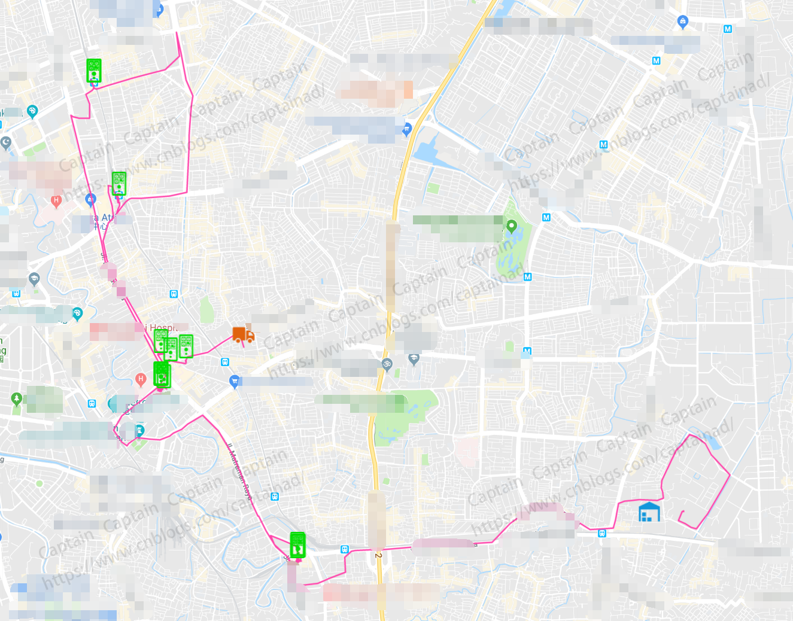

声明：本文基于JavaScript环境编写。
按照目前的项目需求，我们需要在谷歌地图上标记出当前仓库的位置、司机补货的行车路径、司机当前班次需要补货的机器的位置，同时根据补货状态的不同标记成不同状态的图标。
分析完需求，总结一下就是我们需要在谷歌地图上显示众多标记、轨迹画线、不同的标记显示不同的图标，于是前往Google Map查看Api，因为我们的需求重点是在PC浏览器上实现，所以我们只关注了基于JavaScript的API，本文也基于此展开叙述。
从本文中我将大概总结以下几点内容：
我截取了一张实际的效果图，其中图标有蓝色的仓库、绿色状态表示已完成的机器，未完成的机器应该是灰色的，但是这张图中没有这种状态的数据。

前期准备
1、准备好SDK引入
按照GoogleMap API中的指引，你需要引入以下JS文件：
1 <!--
2 * Load the API from the specified URL
3 * The async attribute allows the browser to render the page while the API loads
4 * The key parameter will contain your own API key (which is not needed for this tutorial)
5 * The callback parameter executes the initMap() function
6 -->
7 <script async defer src="https://maps.googleapis.com/maps/api/js?key=YOUR_API_KEY&callback=initMap"></script>其中，YOUR_API_KEY是你在Google云平台操作面板为GoogleMap API使用所申请的秘钥，你可以通过以下指南找到答案。
申请GoogleMap API KEY：https://developers.google.com/maps/documentation/javascript/get-api-key
同时，按照上面引用的JS文件中指明的回调方法，你需要写出函数体，并在此中初始化地图和数据：
1 <script>
2 // Initialize and add the map
3 function initMap() {
4 ....
5 }
6 </script>创建地图
1、创建一个div用来放置地图，可以给地图设置一个id属性，以便生成地图时使用
<div id="map" class="ibox-content" style="padding:15px 0 20px 0"></div>
2、创建Google地图对象，设置中心点和视图层级等信息
1 /* 初始化地图对象 */
2 function initMap() {
3 var center = {lat: 13.751898, lng: 100.500565};
4 var map = new google.maps.Map(document.getElementById('map'), {
5 center: center, // 地图所展现视图的中心点
6 zoom: 10,
7 mapTypeId: google.maps.MapTypeId.ROADMAP,
8 mapTypeControl: false,
9 panControl: false,
10 zoomControl: true,
11 streetViewControl: false
12 });
13 }3、添加仓库位置标记
1 /* 获取仓库位置数据，并在地图上显示仓库图标 */
2 function showWarehousePosition(map) {
3 var warehouseId = $("#warehouse").val();
4 $.ajax({
5 url: 'getWarehouseGpsData',
6 type: 'GET',
7 dataType: 'JSON',
8 data: {warehouseId: warehouseId},
9 success: function (data) {
10 if(data.code == 200) {
11 if(data.result != undefined) {
12 // 从后台响应回来的是一个包含lat和lng属性的对象
13 var warehouseGpsPosition = {lat: Number(data.result.lat), lng: Number(data.result.lng)};
14 // 在地图上生成仓库的标记，仓库图标自定义
15 var marker = new google.maps.Marker({
16 position: warehouseGpsPosition,
17 icon: "./googlemap/images/warehouse.png",
18 map: map
19 });
20 }
21 }else {
22 alert("Failed.");
23 }
24 },
25 error: function () {
26 alert("System error.");
27 }
28 })
29 }4、添加机器的位置，为不同状态标注不同图标
1 // 用于记录机器标注位置，以便于后续清除标记
2 var deviceMarkerArray = [];
3
4 /* 查询机器位置数据 */
5 function showMachinePosition(map) {
6 var buzId = $("#business").val();
7 $.ajax({
8 url: 'getMachineGpsList',
9 type: 'GET',
10 dataType: 'JSON',
11 data: {buzId: buzId},
12 success: function (data) {
13 if(data.code == 200 && data.result != undefined) {
14 var finishedMachineGpsList = data.result.finishedMachineGpsList;
15 var unfinishedMachineGpsList = data.result.unfinishedMachineGpsList;
16 drawMachinePosition(map, finishedMachineGpsList, unfinishedMachineGpsList);
17 }else {
18 alert("Failed.");
19 }
20 },
21 error: function () {
22 alert("System error.");
23 }
24 })
25 }
26
27 /* 绘制机器位置 */
28 function drawMachinePosition(map, finishedMachineGpsList, unfinishedMachineGpsList) {
29
30 // 先清除地图上之前标记过的机器图标
31 // 可做可不做，业务需要的话可以清除
32 clearOverlays();
33
34 // 已完成机器位置
35 if(finishedMachineGpsList != null && finishedMachineGpsList != undefined) {
36 $.each(finishedMachineGpsList, function (index, item) {
37 var marker = new google.maps.Marker({
38 position: item,
39 icon: "./googlemap/images/fulfilled.png",
40 map: map
41 });
42 deviceMarkerArray.push(marker);
43 google.maps.event.addListener(marker,"click",function(){});
44 });
45 }
46
47 // 未完成机器位置
48 if(unfinishedMachineGpsList != null && unfinishedMachineGpsList != undefined) {
49 $.each(unfinishedMachineGpsList, function (index, item) {
50 var marker = new google.maps.Marker({
51 position: item,
52 icon: "./googlemap/images/unfulfill.png",
53 map: map
54 });
55 deviceMarkerArray.push(marker);
56 google.maps.event.addListener(marker,"click",function(){});
57 });
58 }
59
60 }
61
62 /* 清除之前的标记 */
63 function clearOverlays() {
64 if(deviceMarkerArray != undefined && deviceMarkerArray != null && deviceMarkerArray.length > 0) {
65 for (var i = 0; i < deviceMarkerArray.length; i++ ) {
66 deviceMarkerArray[i].setMap(null);
67 }
68 deviceMarkerArray.length = 0;
69 }
70 } 5、生成司机行车路线
通过司机手机手持app实时上报上来的GPS位置信息，我们将之在地图上逐个标记并串联成线，形成轨迹图效果。
1 /* 获取司机行车记录下的GPS数据串，并在地图上连线形成路径 */
2 function showDriverRoute(map) {
3 var buzId = $("#business").val();
4 $.ajax({
5 url: 'getDriverGpsList',
6 type: 'GET',
7 dataType: 'JSON',
8 data: {buzId: buzId},
9 success: function (data) {
10 if(data.code == 200 && data.result != undefined) {
11 drawDriverRoute(map, data.result.driverGpsDataList,
12 data.result.routeColor, data.result.carLocation);
13 }else {
14 alert("Failed.");
15 }
16 },
17 error: function () {
18 alert("System error.");
19 }
20 })
21 }
22
23 /* 绘制行车路线 */
24 function drawDriverRoute(map, driverGpsDataList, routeColor, carLocation) {
25 // 绘制行车路线
26 // driverGpsDataList是一个后台List对象，数组对象中包含的元素都是包含lat和lng属性的对象
27 var driverPath = new google.maps.Polyline({
28 path: driverGpsDataList,
29 geodesic: true,
30 strokeColor: routeColor, // #ff0000
31 strokeOpacity: 1.0,
32 strokeWeight: 2
33 });
34 driverPath.setMap(map);
35
36 // 抓取最后的一个点，绘制一个车的图标，表示车在这里
37 // carLocation是一个包含lat和lng属性的后台对象
38 var latLng = {lat: Number(carLocation.lat), lng: Number(carLocation.lng)};
39 var carMarker = new google.maps.Marker({
40 position: latLng,
41 icon: "./googlemap/images/vehicle.png",
42 map: map
43 });
44 }1、https://developers.google.com/maps/documentation/javascript/tutorial